How OGL Cortex thinks about attack surfaces, which defences ship with it, how to run adversarial passes against your own guards, and a hardening checklist for a new install.
OGL Cortex targets a single owner running a small agent fleet on one host. It is not an enterprise security programme. Section 5 maps the enterprise items to their closest equivalent.
Related documents: 30-sre-runbooks.md (RB-06 key rotation), 31-observability-alerting.md (credential and settings watchers), 42-chaos-telemetry-determinism.md (how guards are tested), 34-changelog.md (when each guard arrived).
Terms
- Prompt injection: outside text (a web page, an email, a transcript) written to look like an instruction, so an agent reading it might obey it.
- Hook: a script Claude Code runs before or after a tool call. A PreToolUse hook blocks the call by exiting with code 2. Any other non-zero exit does not block.
- Pass token: a file a seat touches to let one blocked command through. It is self-issued, so it is a speed bump with an explanation, not an authority gate.
- Adversarial pass: a fresh, read-only Claude session told to break exactly one claim about a guard or fix (
harness/tools/adversarial-pass.sh). - Gate: the auditor seat re-runs a guard packet's tests and adds its own probes before ops may install it.
HOLDmeans fix first.PASSmeans install. - Mutant: a deliberately broken copy of the code. A good test suite fails on it ("killed").
- Oracle: an independent source of truth used to grade a guard, for example the real shell's behaviour.
1. Trust model

The core risk is the arrow from untrusted input into a seat that can both run commands and read secrets. Every defence in section 3 cuts, narrows or watches one of these arrows.
2. Attack surfaces
2.1 Telegram
- Who can drive a seat. The daemon refuses to enable Telegram for a seat whose
.envhasBOT_TOKENbut no valid numericALLOWED_USERlist. Inbound messages from anyone else are dropped. This is the strongest control in the system. Keep it. - What still gets in. The allowed user forwards untrusted material: links, screenshots, voice notes, pasted third-party text. The allow-list proves who sent a message, not that its content is safe.
- Voice notes arrive as speech-to-text. Treat proper nouns and numbers in transcripts as unverified.
2.2 Video links and transcripts
Short-form videos are pulled, transcribed and summarised. The transcript is untrusted text. Videos often point at a GitHub repo, which raises the stakes: see 2.5.
2.3 Web pages
Seats browse with Playwright, other browser MCPs, and sometimes the owner's own browser. Page text enters the model's context directly. First-party code that fetches pages (scrapers, graders) also carries web content in. Trusted code does not make its input trusted.
2.4 Email
- Auto-reply engines. Any engine that feeds inbound email into a classifier prompt is a live injection surface. The safe design: the model only picks from a fixed set of approved replies; every merge field that reaches the outgoing message is checked against a source the attacker cannot write (for example, a number is sent only if it appears in your own config); a deterministic STOP and out-of-office filter runs before the model; each reply is marked handled before sending.
- Mail read through MCP is untrusted text with the same risk.
- Alerts that quote inbound mail carry third-party personal data into your chat. Keep excerpts short.
2.5 Third-party code, skills and models
Installing a skill into ~/.claude/skills makes it visible to every seat. Running a cloned repo runs its code with the seat's permissions. Model loaders with trust_remote_code run code from the model repo. A good pre-install scan lists: network hosts the code contacts, environment variables it reads, files it writes outside its own folder, and any eval or dynamic code paths.
2.6 Secrets on disk
Typical locations in an install:
| Location | Holds | Expected mode |
|---|---|---|
| System keychain | Generated passwords, API keys | Keychain ACL |
Mode-600 config files (for example ~/.config/<tool>/) |
Tokens, service account JSON | -rw------- |
~/.claude.json |
MCP server config, including static Authorization headers and env keys |
-rw------- |
~/.google_workspace_mcp/credentials/ |
Per-account OAuth tokens | -rw------- |
$CTX_ROOT/secrets/ |
Framework-level secrets | -rw------- |
Seat .env |
BOT_TOKEN, CHAT_ID, ALLOWED_USER |
-rw------- |
Secrets also leak into places that are not "secret files": build caches (.next/), git history, dangling git objects, logs, and chat transcripts.
2.7 Shared bot tokens
The command-line tool is named cortextos.
If a human's desktop Claude session sends Telegram with a seat's bot token by direct curl, those sends bypass the outbound log and the send guard. It also creates a second, unlogged holder of the key. Give each sender its own bot or route all sends through cortextos bus send-telegram.
2.8 MCP servers
Servers authenticate in three ways: OAuth grants stored on disk, static bearer headers in ~/.claude.json, and env keys. Remote MCP servers run by third parties return tool output that is untrusted text inside every seat that loads them. OAUTHLIB_INSECURE_TRANSPORT is normal for a localhost callback and matters only if the callback is reachable from another host.
2.9 Network listeners
The dashboard, local preview servers, bot servers and container ports can bind to all interfaces. A mobile control API that can approve, stop and start the fleet is the most sensitive listener. Bind it to loopback or a private tailnet address, and require a bearer token. Tunnels (for example cloudflared LaunchAgents) expose local services to the internet; inventory what each one forwards.
3. Defences that ship with OGL Cortex
3.1 Telegram allow-list (framework, mechanical)
ALLOWED_USER must hold one or more numeric Telegram user ids. Without it, Telegram stays off for that seat. Source: src/daemon/agent-manager.ts.
3.2 Memory-injection discipline (rule)
Untrusted content is never written verbatim into memory files, daily logs or MEMORY.md, because memory is injected into the next session as trusted context. Paraphrase external findings with a source pointer, and turn imperative text into descriptive text. No hook enforces this; it relies on seat instructions.
3.3 Untrusted-code rule (rule)
Never hand untrusted code to an agent that can both run commands and read secrets. Scan first, then run in a sandbox or a seat started with an empty environment and no keychain access.
3.4 Secrets never over chat (rule)
Secrets go to the keychain or a password manager. If one lands in chat, rotate it (RB-06).
3.5 Pentest gate, ship wrapper and ship hook (mechanical)
- Pentest gate (your own scanner; not included in this repository): writes
security/pentest-gate-report.jsonwith"status": "pass"or"fail". A good gate runs a secret scan (for example TruffleHog), a dependency audit, a web scan (for example OWASP ZAP) when given a URL, header checks, and an API authorisation evidence check for apps with accounts. Never write raw secret-scan output to disk; store hits redacted, and treat an unverified hit with no recorded disposition as a blocker. - Ship wrapper (
harness/tools/ship.sh): gate, deploy a candidate, gate the candidate URL, then promote the same build. Exit codes in RB-11. - Ship gate hook (
harness/hooks/ship_gate.py, PreToolUse at seat or user level): blocks recognised ship commands unless a passingsecurity/pentest-gate-report.jsonexists in the current directory or an ancestor. - Risk acceptance lives in a separate acceptance note under
security/, written in the owner's words. The gate report always keeps its true verdict. A wrapper that rewrites the report topassis a forged pass.
3.6 Shared-surface guard (mechanical)
harness/hooks/shared_surface_guard.py (installed to <seat>/.claude/hooks/ogl/) with its parser surface.py and code reader codewrites.py. It blocks, with exit 2, any command that changes a surface other seats depend on:
- package cache prunes (
uv cache prune,uv cache clean), globalnpm/pnpminstalls,brew upgrade; - writes and deletes under
~/.claude*(outsideprojects/), and any credential or config folder you list inOGL_SURFACE_EXTRA_ROOTS; - deletes under
~/.claude/projects/(seat transcripts and auto-memory); - every delete spelling it can parse:
rmwith brace expansion,trash, Finder delete throughosascript,find -delete,find -execrunning any write verb on a protected root.
The block message names live consumers and asks for a backup and a post-check. A per-seat pass token releases one command: touch ~/.ogl-cortex/state/.surface-pass-once-$CTX_AGENT_NAME (valid 10 minutes, consumed once, logged). With SURFACE_CODE_MODE=warn, the code-analysis rule only warns; redirects, cp, rm and direct writes still block. The guard fails closed when the raw command names a guarded root and the guard itself errors.
3.7 Google Workspace account guard (optional, not included)
An account guard is a PreToolUse hook on the Google Workspace MCP that blocks calls for accounts you list, any account in an open credential-mismatch episode, and any start_google_auth call, with no pass token. This repository does not ship one. See RB-09.
3.8 Send guard (writing guard, security-adjacent)
harness/hooks/orwell_lint.py lints outgoing Telegram and MCP sends against a fixed rule set with word lists and regex, no model. It fails closed in scope. It matters for security because sends that bypass the bus also bypass it. Escape for one send: touch ~/.ogl-cortex/state/.orwell-pass-once-$CTX_AGENT_NAME.
3.9 Credential identity and settings watch (detector)
An hourly check pages once per episode when a credential file holds a token for the wrong account, and once per change when any watched settings, hook, skill or mcpServers entry changes hash. See 31-observability-alerting.md section 4.3.
3.10 Dispatch and time guards (process integrity)
brief_guard.py refuses cross-seat task dispatch without TASK:, FILES:, BAR: and RETURN: lines. future_time_guard.py refuses writes and sends that stamp a UTC time more than 3 minutes in the future. Neither is a security control in the narrow sense; both stop a seat from creating records that look verified when they are not.
4. Running adversarial passes
Guards are code that decides what a model may do. Test them like code, then attack them.
4.1 The guard packet
Every guard change ships as a packet in its own folder:
<guard>-<version>-<date>/
README.md # claim, scope, install and rollback lines
candidate/ # the new guard files
tests/ # must-flag and must-allow rows
mutants.py # each mutant removes one rule; every one must turn a test red
oracle.json # optional: real-shell results for each probe
replay_diff.py # run old and new guard over real command history; list every verdict change
install.sh # refuses without an auditor PASS; backs up the live file; verifies hashesThe bar before install:
- Tests fail on the live guard and pass on the candidate for the named commands.
- Allowed cases stay allowed.
- Every mutant is killed.
- The replay over real history shows only the intended verdict changes.
- The auditor seat returns
PASSafter its own probes. - The installer writes a backup
<file>.bak-<UTC stamp>-<reason>and a frozen<file>.gated-<sha>copy.
4.2 The real-shell oracle
The strongest test grades the guard against what the shell does, not what the author believes. For each probe shape, run the command for real in each shell (bash, zsh, sh) inside sandbox-exec with a must-find control first. If the control misses, the run is void. Compare the guard's verdict to the sandbox's observed write or delete. Report MISS (dangerous, allowed) and over-flag (safe, blocked) separately.
4.3 Adversarial passes
Run one fenced pass on every guard, hook or fix before you call it done:
harness/tools/adversarial-pass.sh --claim "<one rule the guard must hold>" --cd <dir> [--budget 10] <files...>The fence:
- one claim, fresh eyes (never the author), read-only tools;
- evidence as
file:lineplus a reproduction; - one round and a time budget.
Judge each finding with one question: can a real user or operator action reach it? Drop invented inputs, even true ones. Every fix lands with a test that fails without it. Prove fixes with tests, never by re-running the pass. Stop when findings turn into edge cases nobody can reach.
A void run (for example, the engine failed to authenticate) can read like a clean report. adversarial-pass.sh exits 3 when the engine failed or timed out. Check the exit code and the run header before you trust an empty findings list.
4.4 Positive controls in production
A guard that never fires looks the same as a guard that works. Give each guard a scheduled positive control: a known-bad call that must be blocked and logged. A landed file or a missing BLOCK line is an outage.
5. Enterprise items and their equivalents
| Enterprise item | Fit for a one-owner fleet | Closest equivalent |
|---|---|---|
| External pentest firm | Rarely | Pentest gate on every ship; auditor gates; adversarial passes |
| Bug bounty | No | None. Keep public surfaces small and gated with --url |
| SOC or SIEM | No | Sentinels plus the event log |
| Threat model sign-off | Light | Section 2 of this document plus adversarial-pass claims |
| Secrets manager with rotation policy | Partly | Keychain or password manager plus mode-600 files; rotation is manual and owner-gated |
| Separate prod and dev accounts | Partly | One browser profile per business account |
| Least-privilege service account per agent | No | All seats run as one OS user. Per-seat pass tokens and per-seat hook registration are the only separation |
6. Hardening checklist for a new install
Work through this list after setup and again after any major change.
Host
Secrets
Gates
Guards
Third-party code
Access
7. Known limitations
- Pass tokens are self-issued. A seat that wants to bypass a guard once can.
- The shared-surface parser cannot see every form: code inside script files, runtime-assembled paths, JavaScript for Automation, HFS paths, and
do shell scriptbodies remain open. - Memory-injection discipline is enforced by instructions, not by a hook.
- All seats share one OS user. There is no kernel-level isolation between seats.
- A Telegram bot token is a full credential. Anyone holding it can send as the bot and read its updates.
Source files
src/daemon/agent-manager.ts(Telegram allow-list)src/cli/roster.ts(seat.envkeys)src/hooks/(framework hooks)templates/agent/GUARDRAILS.md,templates/orchestrator/GUARDRAILS.md(untrusted content and memory writes)